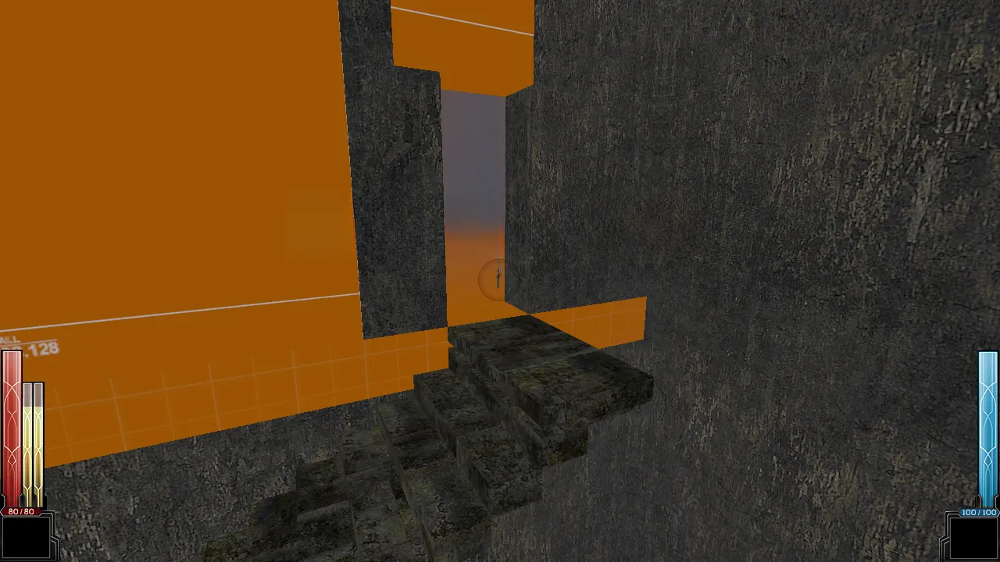
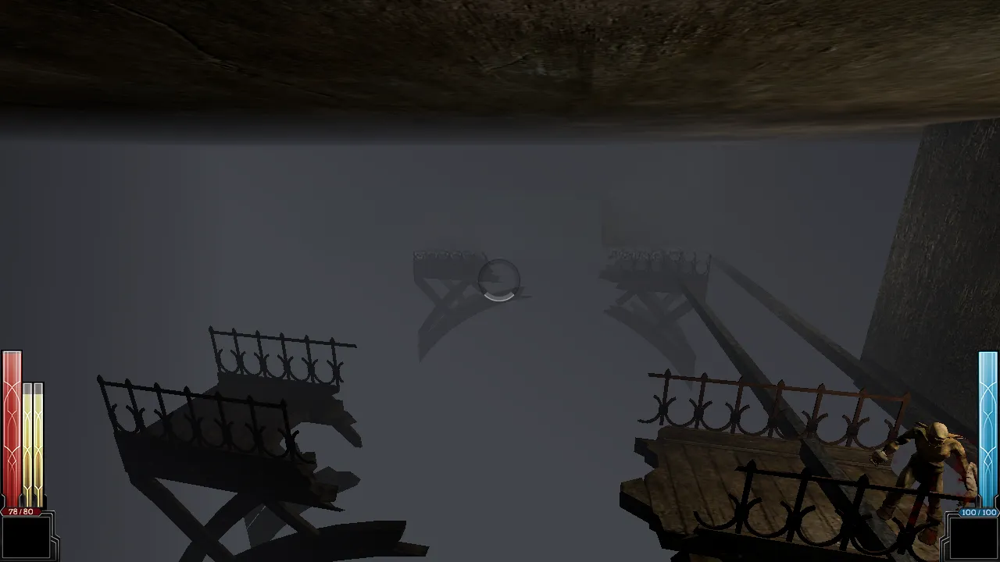
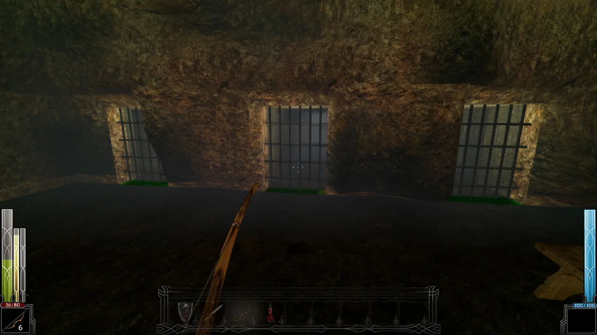
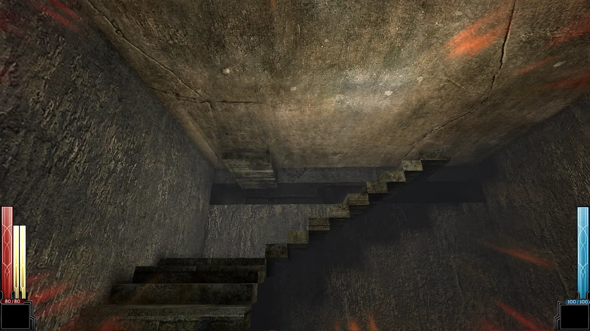
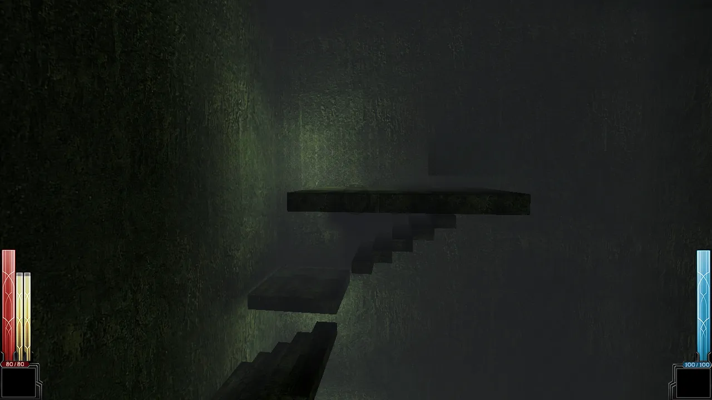
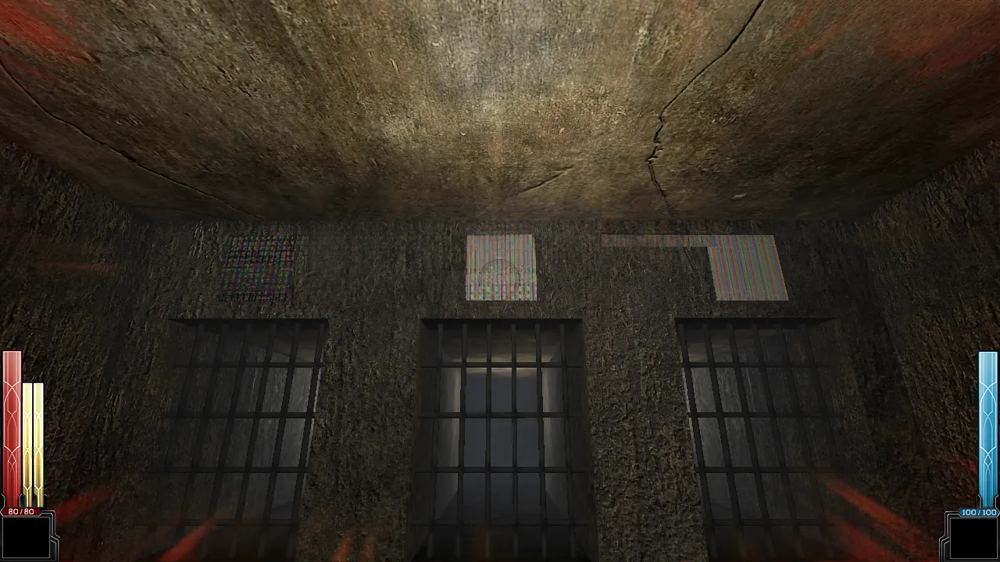
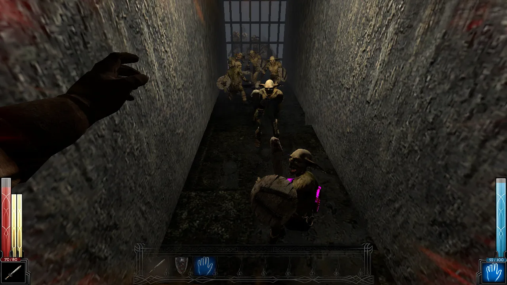
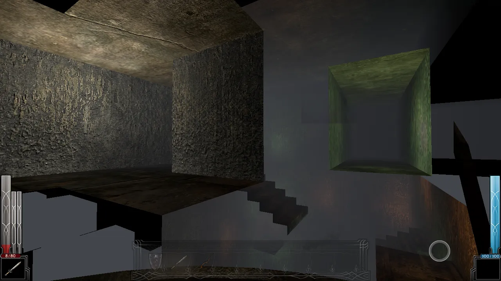

Donjon · Dark Messiah
Modding d'un donjon original pour Dark Messiah of Might and Magic, pensé pour tester le moteur et offrir une autre vision du jeu. Inspiré du film Cube : à chaque salle gagnée, un carrefour s'ouvre sur plusieurs issues, et en choisir une scelle les autres.
- Statut
- En développement actif
- Jeu de base
- Dark Messiah of Might and Magic (moteur Source)
- Outils
- Inspiration
- Cube (1997) : choix irréversibles, tension sans dialogue



Le pitch
Un projet de modding né de l'envie de tester le moteur Source et d'offrir une autre vision du jeu. Le joueur grimpe une tour où chaque salle gagnée révèle un carrefour à plusieurs issues : en choisir une scelle irrémédiablement les autres. Il n'y a ni retour en arrière ni parcours identique deux fois — chaque traversée explore une branche différente parmi plusieurs : un pont vertigineux au-dessus du vide, un puits d'acide qui monte, un donjon claustrophobique en grotte. Le joueur avance sans savoir ce qui l'attend, porté par une tension construite entièrement en jeu, sans une ligne de dialogue.
Nom encore à choisir — pistes à l'étude : « La Tour sans Retour », « Le Puits des Damnés », « Ascension ».
Structure
- EntréeEscalier, antichambre, mécanisme de grille à levier
- Salle S01Chicane de piliers, vague de gobelins
- Le carrefour3 herses, une seule s'ouvre, sans retour
- 3 branchesPont sur le vide, puits d'acide, grotte close
Level design



- Verticalité comme moteur d'ambiance : le puits d'acide et le pont sur le vide exploitent la hauteur du moteur Source pour jouer sur le vertige et la chute.
- Choix irréversibles : chaque carrefour ferme définitivement les autres issues ; la rejouabilité vient de la variété entre les parties, jamais d'un retour en arrière.
- Rythme de combat calibré : les vagues de gobelins du pont ont été ajustées après plusieurs tests en jeu pour garantir un vrai un-contre-un, sans ralentir le moteur.
- Narration muette : une silhouette figée récurrente, une ambiance qui se dégrade en montant — tout passe par la mise en scène et le décor, sans dialogue.
- Fidélité aux conventions Arkane : chaque nouvelle mécanique est d'abord vérifiée dans les vraies cartes du jeu avant d'être construite, pour rester cohérente avec le titre original.
Coulisses
Plutôt qu'un placement à la main pièce par pièce, un pipeline Python maison génère les salles, escaliers
et volumes en fichier .vmf, avec des garde-fous automatiques (sauts franchissables, absence
de chevauchement) qui accélèrent les itérations. Des outils annexes développés pour le projet permettent
d'extraire et d'encoder les assets du jeu d'origine.


Où en est le projet
Construit et validé en jeu : l'entrée, la salle S01, le mécanisme du carrefour à trois portes, le pont sur le vide et le puits d'acide de bout en bout, ainsi que la salle de convergence en grotte. En cours : le polissage de la troisième branche. À venir : raccorder les trois sorties à la suite du donjon, peupler les branches d'ennemis, passer une couche d'ambiance et d'éclairage, jusqu'à un premier segment jouable de bout en bout.